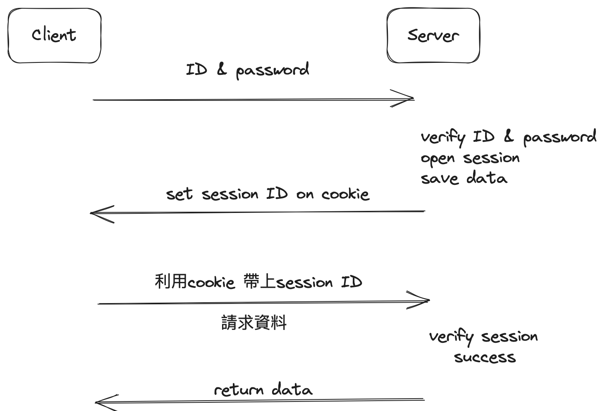
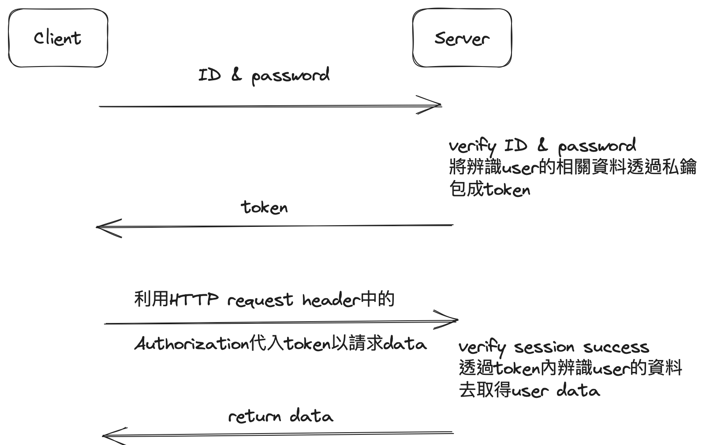

Authontication
Session-based Authentication v.s. Token-based Authentication
By MLL
18 April 2023
Session-based Authontication
- 利用Session來進行驗證的機制
- 流程如下圖

- Note: Http cookie 位於 Http request header中的小區塊，自動存於client side。
Token based Authentication
- 流程如下圖

- Note：server不需要儲存任何資料，token由client保管
- Difference:
- Session based 利用cookie傳遞資料，cookie只要同網域下的請求都會帶上。
- CSRF(Cross Site Request Forgery): Eve可用他的網站去連線Alice網站的API，就可以更動Database。
- 如果環境被監聽(MitM, Men in the Middle Attack)，則兩種都不安全。 可以用SSL加密解決。
- Session based中，每次session建立，都需要儲存空間，儲存辨識使用者的資料。
- Token based中，辨識使用者的資料則是交給token進行儲存，不需要很大的伺服器空間，相同空間的情況下，能服務的使用者較多，但伺服器無法主動結束一個token，只能等token自己到期。
This site uses cookies. By continuing to use this website, you agree to their use. I Accept